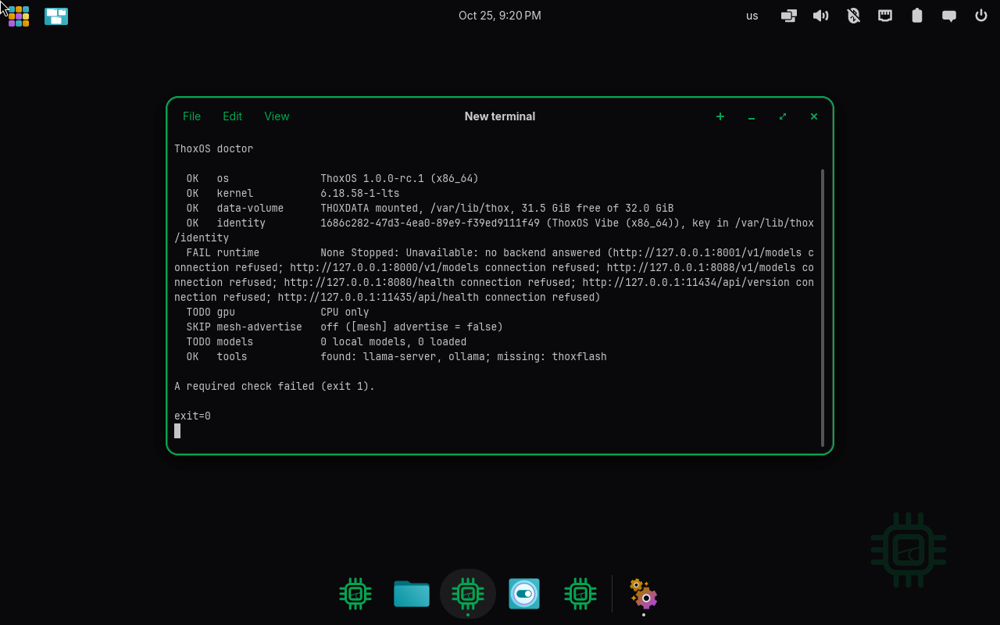
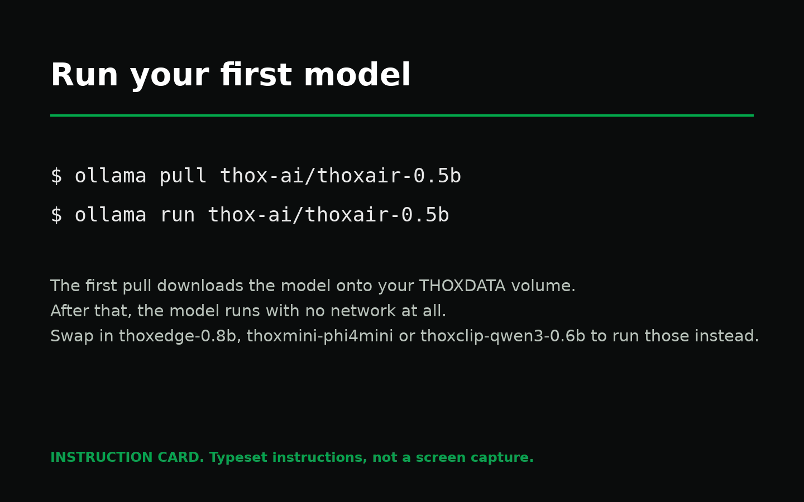
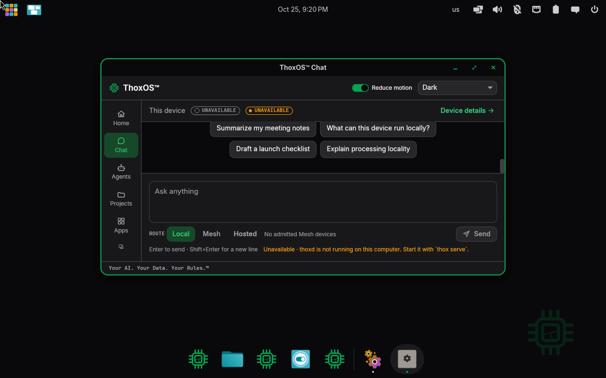
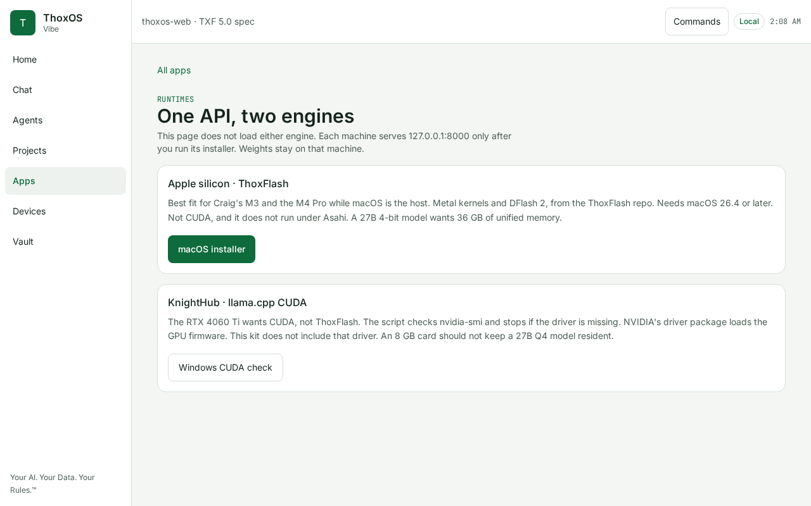

ThoxOS Open — Walkthrough C: Run your first model
Check the machine, fetch a model with one command, and ask it a question. ThoxOS images ship with the engines installed and no model on board by design — models are downloads you choose, stored on your THOXDATA volume, and they run entirely on your own hardware. The machine tells you exactly that before you start; figure C-01 is it talking.

REAL — terminal on the running system, VM capture 1 2 3C-01 — Check the machine first: thox doctor
- The foundations, all OK: ThoxOS 1.0.0-rc.1 (x86_64), the kernel, THOXDATA mounted with room to spare, and this machine's own identity key.
- The one failing line, and it is the point of this walkthrough: no model backend is running yet — "0 local models, 0 loaded." A fresh install is supposed to say this.
- The tools are already here:
ollamaandllama-serverare found. You install nothing to run a model; you only fetch the model itself.
Plain English: thox doctor is the pre-flight check. Four green lines say the system is healthy; the red line is a shopping list of one item — a model.

INSTRUCTION CARD — typeset instructions, not a screen captureC-02 — The one command
ollama pull thox-ai/thoxair-0.5bdownloads ThoxAir-0.5B — the THOX flagship model for the ThoxAir tier (GATE49 47/49, promoted) — onto your THOXDATA volume.ollama run thox-ai/thoxair-0.5bstarts it. Swap the name for the others:thoxedge-0.8b(46/49, promoted),thoxmini-phi4mini(47/49, documented baseline),thoxclip-qwen3-0.6b(grounding required). The same models are on Hugging Face under Thox-ai.
Plain English: two lines in a terminal. The first is a download; the second is a conversation. After the pull, no network is needed. A real capture of this exact session on real hardware is the first item in GAPS.md — this card stands in until then, rather than a staged screenshot.

REAL — Shell Chat screen, VM capture 1 2 3C-03 — Where the answer appears: Chat
- The route selector: Local, Mesh, Hosted. Local means this device answers. The choice is yours on every conversation, and Local is the default.
- The prompt box and the starter questions — including, honestly, "What can this device run locally?"
- The status line, kept honest: captured in the first minutes after boot, before the background service finished starting, so the screen says the device is unavailable rather than inventing an answer.
Plain English: chat is one of the doors on the left rail. What matters is the small word under the box — Local — because it tells you whose computer is doing the thinking. Yours.

SIMULATION — TXF web preview page, an explainer, not the engine 1 2 3C-04 — Which engine runs it, per machine
- Apple silicon: ThoxFlash, Metal-based, served on the Mac itself while macOS hosts.
- A PC with an NVIDIA card: llama.cpp with CUDA, checked against the driver before it starts.
- The page's own honesty line, at the top: "This page does not load either engine." One API, two engines; the weights stay on the machine that serves them.
Plain English: you do not pick an engine. ThoxOS serves the same local API on each kind of machine and uses the engine that fits the hardware.